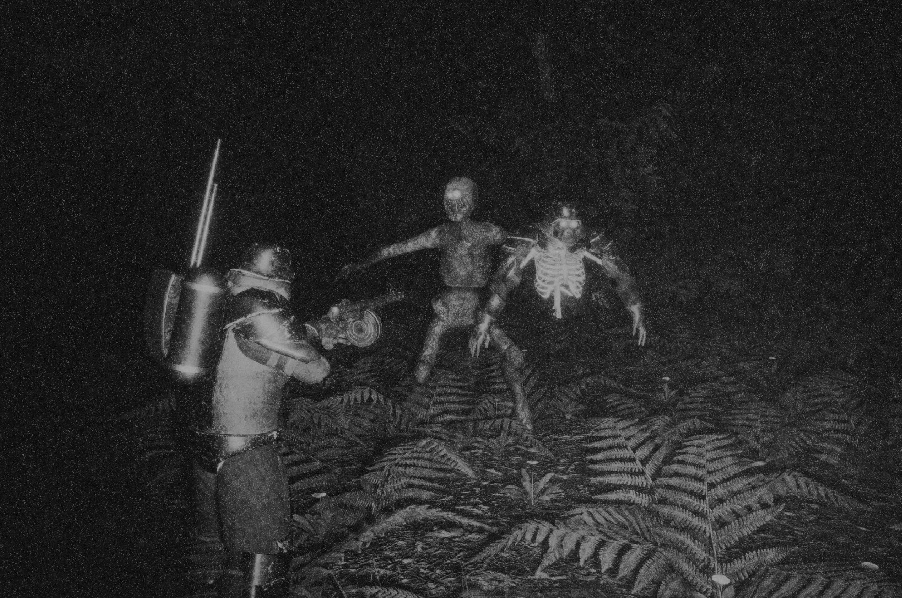
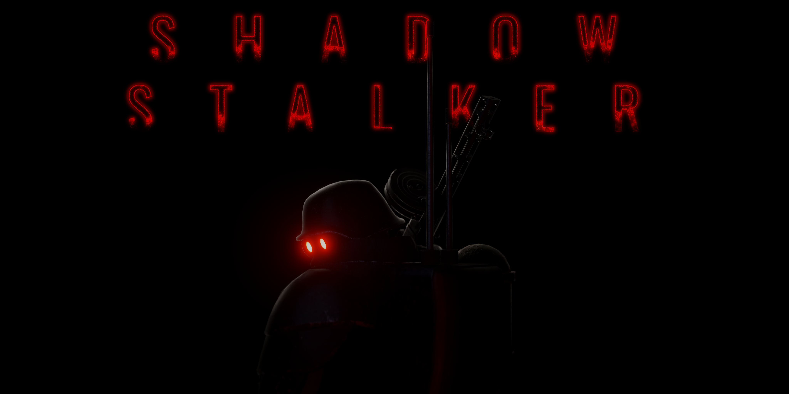

It's been a while since I've worked on my game due to my new job, after settling I managed to finally relax a bit and Start my work Again.
I first started out by simply getting a simple sync'd character setup and animated.
Modular swapping and reload animation (all fps animations are hand-animated)
Then I went and added some weapon sway and a test "downed" animation.
Slidin' around
Tried to sync aim, but like printers.... animation blueprints are unpredictable
Damn.
Around this time it started to get close to halloween, so of course I made a hat for the occasion.
Also got the aim working.
What good is a game if there is nothing to do? Lets make a placeholder beacon for the hunters to activate. hope you like the design, you are going to be seeing a lot of it.
Boing!getting it to work in-game
Time to actually make the weapon functional.
Add some impact materials.
I then went on to spend a LOT of time on the weather system, too much time. I could have just used UDW. But I like the visor effect enough to keep it around
tried my hand at redesigning the old menu, something I will revisit later. tried to make it cinematic but honestly it's just too slow
What Doth Life? But simply the prelude to death.
Jumping on the oppertunity to post this funny glitch. I like to imagine the old WAAAAAHAHAWAHOOOO scream from the goofy show.
Since I got most of the newer systems implemented, I decided to bite the bullet and finish the rest of the gamemode systems from the older project
Some lighting and map work.
Got the materials set up for the Hunted.
Got bored with the only weapon in the game, so I added another one, which then prompted me to rewrite the entire weapon system because of how bad the previous design was implemented
Even with new animations it still hickups a bit.
I then implemented the objectives and ammo refill depots to actually work with the gamemode.
Why do they call it the hunter if you hunt in the out of when you in the hunted? Anyways I added some majestic deer.
Worked on some roughdrafts for the hunted actually eating fallen hunters/animals
Some more work on the hunted's third person animation while eating.
can't have a Jin-Roh/HL2-Combine Ripoff without an actual mg42 can you? So I added one..
Anyways, That's it for a quick catchup for my devlog and what I've been up to these few past months. Be sure to wishlist and follow ShadowStalker on steam for notifications on future network tests and alpha key give-aways
And with that I leave you some promo material that I also made in the meantime.

Very painful way to go tbh

ShadowStalker - Wishlist now on SteamHah hah yes dance, you little gnome...